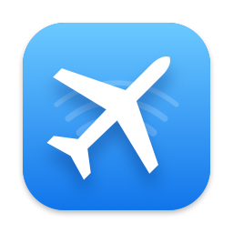

Airplane: Data Saver
Airplane mode for your Mac's data.
On a phone hotspot, a metered connection or in-flight Wi-Fi, Airplane lets only the apps you choose use the network. Everything else waits until you're back on normal Wi-Fi.
- Turns on by itself when your Mac joins an iPhone hotspot or a network you marked as metered.
- Flight presets pause iCloud, Dropbox, OneDrive, software updates and other background syncs.
- See who's using data: a live list of apps and how much each one used.
- Never strands you offline: if anything goes wrong, Airplane lets traffic through.
Available on the Mac App Store. Requires macOS 14 or later on Apple silicon.